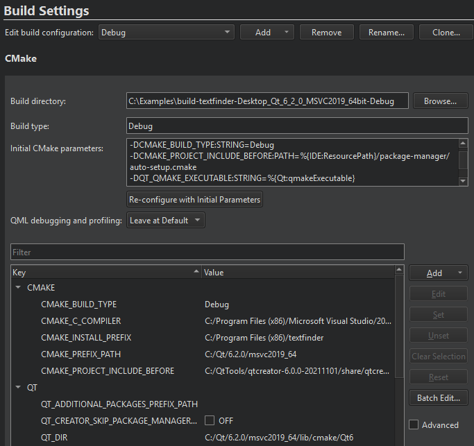
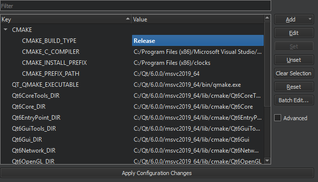
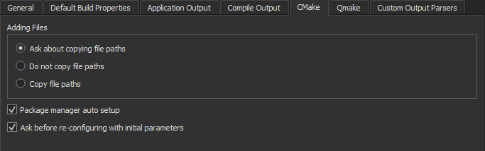
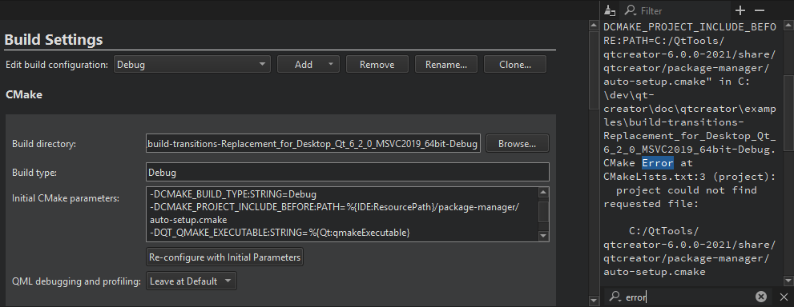
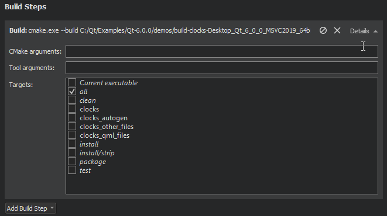
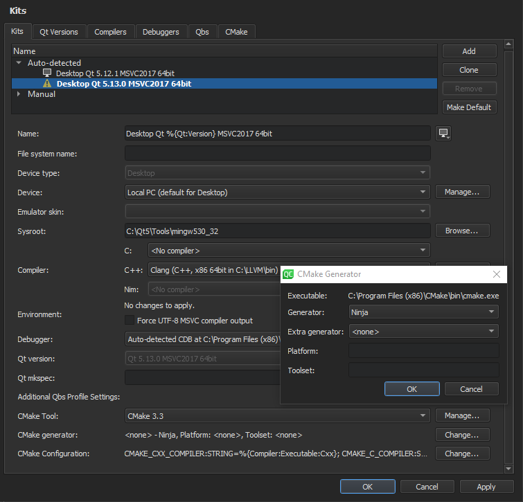
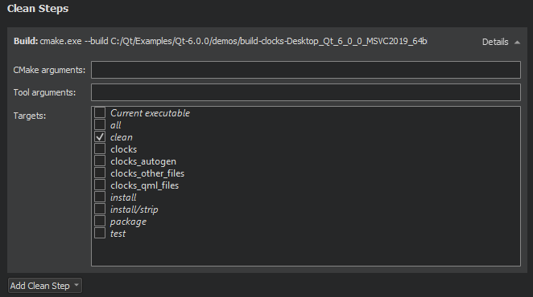

CMake Build Configuration
Configuring medium-sized to large CMake projects in Qt Creator can be a challenge due to the number of options that you need to pass to CMake to configure the project correctly. To make this easier, Qt Creator creates an initial configuration for you based on the kit settings and displays it in the Initial CMake parameters field and in a table that lists the parameter names and values.

Parameter names are listed in the Key column. Names with a common prefix (up to the first underscore character) are grouped under the prefix.
Multi-Config Support
Qt Creator supports Multi-config generators, such as Xcode, Visual Studio, and Ninja Multi-Config. This means that you need to configure CMake only once, have only one build directory, and can switch between build types faster.
However, this means that Qt Creator can no longer simply parse the first CMake file-api JSON export. Therefore, the value of the Build type field must match that of the CMAKE_BUILD_TYPE variable for the single configuration generators (Ninja, Makefile) to determine, which generator to use.
When developing with Qt 6 for iOS, only the Xcode generator is supported.
Modifying Initial Parameters
In the Value column, you can view and edit the actual values of the parameters that are passed to CMake.

To view all parameters, select the Advanced check box.
To add parameters, select Add, and then select the type of the parameter that you are adding: Boolean, String, Directory, or File.
To change the type of the selected parameter, right-click the parameter name in the Key column, and then select Force to bool, Force to file, Force to directory, or Force to string in the context menu.
To copy the name or value of the selected parameter to the clipboard, select Copy in the context menu.
To modify the value of a parameter, double-click it, or select it, and then select Edit.
You can apply actions to multiple parameters at a time. To clear the selection, select Clear Selection.
To remove the selected parameters, select Unset. To undo the removal, select Set.
To reset all the changes that you made, select Reset.
To modify the environment variable values for the CMake build environment, select Batch Edit. For more information, see Batch Editing.
To save the changes, select Apply Configuration Changes. Keep in mind that a configuration change might trigger a follow-up configuration change.
The parameter values that you change are passed via -D<option>=<value> to CMake, which stores the options in the CMakeCache.txt file. This means that if you remove the build directory, all the custom parameters that are not part of the initial CMake parameters are also removed.
To reconfigure a project using the modified parameters, select Build > Clear CMake Configuration, which removes the CMakeCache.txt file. This enables you to do a full rebuild.
Re-configuring with Initial Parameters
To reset CMake parameters to the initial ones, select Re-configure with Initial Parameters.
To be asked before Qt Creator resets the changes, select Tools > Options > Build & Run > CMake > Ask before re-configuring with initial parameters.

Viewing CMake Output
Output from CMake is displayed next to the Build Settings and Run Settings panes in the Projects mode.

To clear the search results, select the  (Clear) button.
(Clear) button.
You can enter a string in the Filter field to filter output. To specify filtering options, select the  button. You can filter output by using regular expressions or case-sensitivity. Select Show Non-matching Lines to hide the lines that match the filter.
button. You can filter output by using regular expressions or case-sensitivity. Select Show Non-matching Lines to hide the lines that match the filter.
Press Ctrl+F to search for a string from the output.
To increase or decrease the output text size, select  (Zoom In) or
(Zoom In) or  (Zoom Out), or press Ctrl++ or Ctrl+-.
(Zoom Out), or press Ctrl++ or Ctrl+-.
CMake Build Steps
Qt Creator builds CMake projects by running cmake . --build, which then runs the CMake generator specified in the project configuration: make, mingw32-make, nmake, or ninja, for example. The CMake generator produces project files for Qt Creator. Multi-config generators are also supported.
You can add arguments to pass to CMake and the generator and targets for the build command in Build Steps.

Note: While the other CMake generators are installed together with Qt, you usually need to install Ninja yourself.
Using Ninja as a CMake Generator
To use Ninja with CMake, you must install it and select it as the CMake generator in the build and run kit:
- Install Ninja.
- Add the path to the Ninja executable to the value of the PATH system variable.
- Select Tools > Options > Kits, and then select the build and run kit for the project.
- Select Change next to the CMake generator field to open the CMake Generator dialog.

- In the Generator field, select Ninja.
- Select OK to return to the Kits tab.
- Select OK or Apply to save your changes.
Note: To make sure that old build artifacts don't get in the way the first time you build the project after the change, select Build > Rebuild Project. This cleans up the build directory and performs a new build.
Using CMake with Conan
Qt Creator can automatically set up the Conan package manager for use with CMake.
Select Tools > Options > Build & Run > CMake > Package manager auto setup to set the value of the CMAKE_PROJECT_INCLUDE_BEFORE variable to the path to a CMake script that installs dependencies from a conanfile.txt, conanfile.py, or vcpkg.json file in the project source directory.
CMake Clean Steps
When building with CMake, you can add arguments to pass to CMake and the generator and targets for the clean command in Clean Steps.

The build errors and warnings are parsed and displayed in the Issues output pane.